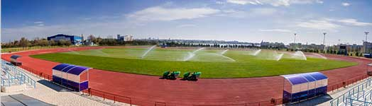

Беговые дорожки
длина круга - 400 м,
покрытие дорожек - «Regupol»,
количество дорожек - 8 шт.
Сектор для прыжков в длину
2 шт. Покрытие -
«Regupol» / песок
Сектор для тройного прыжка
2 шт. Покрытие -
«Regupol» / песок
Сектор для прыжков с шестом
2 шт. Покрытие -
«Regupol» / прыжковая яма (поролон)
Сектор для прыжков в высоту
Покрытие - «Regupol» /
прыжковая яма (поролон)
Яма с водой и препятствия
Есть
Комплект барьеров
Есть
